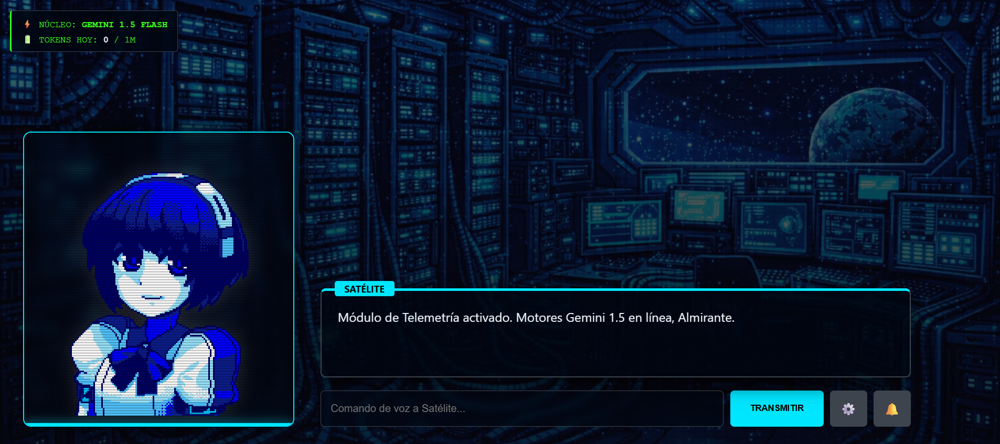

Satelite
Un asistente de IA con interfaz de anime que lee mis correos no leídos vía IMAP y procesa las solicitudes que llegan por correo empresarial. Conectado a Gemini y alojado en mi HomeLab.
Satelite nació con una visión de dos frentes: convertir la bandeja de entrada en algo que una IA pudiera leer y actuar sobre ella, con una interfaz amigable de estética anime que le diera personalidad al asistente.
El primer frente —ya funcional— es la lectura de correos: Satelite se conecta por IMAP, detecta los correos no leídos y procesa las solicitudes que llegan por correo empresarial, apoyándose en Gemini para interpretar el contenido.
El segundo frente era más ambicioso: enseñarle la base de datos de la empresa para que generara los informes en Excel que se pedían por correo —con aprobación manual antes de enviarlos—, produciéndolos a partir de los datos reales. El proyecto llegó hasta la lectura de correos: la generación de informes quedó frenada por la falta de tokens consistentes en Gemini, así que Satelite se estabilizó como un asistente de correo sólido, a la espera de retomar esa segunda etapa.

Qué hace hoy
Lectura de correos IMAP
Se conecta por IMAP y detecta los correos no leídos, sin depender de reglas manuales ni de revisar la bandeja a mano.
Procesamiento con IA
Usa Gemini para interpretar el contenido de las solicitudes que llegan por correo empresarial y extraer lo relevante.
Interfaz con personalidad
Una interfaz de estética anime que le da cara al asistente, en lugar de un panel plano de automatización.
Es un proyecto funcional pero en evolución: la base de asistente de correo está sólida, y la generación de informes desde la base de datos es la mejora natural cuando el presupuesto de tokens lo permita.